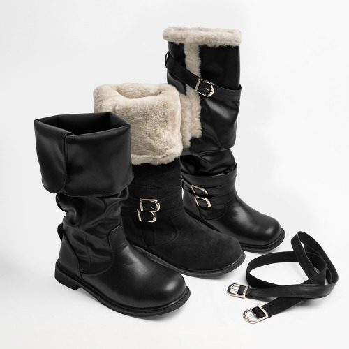
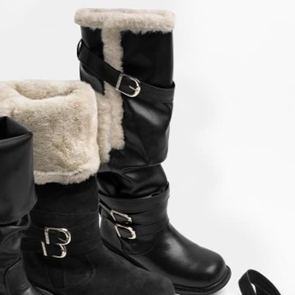
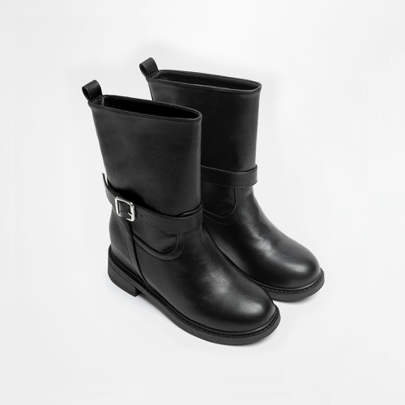

소영님 블랙 부츠 촬영 가이드
소영님 부츠·구두 영상 두 편이 정말 잘 나와서, 그 흐름 그대로 찍어 주시면 돼요. 이번 영상의 포인트는 한 켤레로 두 가지로 신는 모습과 무릎 아래 다리 라인이에요. 세로 9:16, 20초 안팎이에요.
제품 · 셋 중 하나를 골라 주세요모두 블랙으로 보내 드려요

페탈커스텀 멀티웨이 롱부츠 · 블랙 레더(사진 맨 앞)75,900원스트랩을 풀고 윗단을 접으면 롱·미들 두 가지 길이로 신어요. 굽 3cm, 무신사 부츠/워커 1위.상세 보기 ↗
페탈 퍼커스텀 멀티웨이 롱부츠 · 블랙 퍼 안감79,900원안쪽에 퍼가 들어간 겨울 버전이에요. 레더·스웨이드 중 고를 수 있고, 윗단을 접으면 퍼가 보여요. 같은 상세 페이지의 퍼 옵션이에요.상세 보기 ↗
놀킨키높이 바이커 투웨이 미들부츠 · 블랙69,900원바이커 버클 미들부츠에 안쪽 굽 7.5cm. 겉으로 티 안 나게 키가 커 보여요.상세 보기 ↗블랙 부츠 신은 전신 핏 + 제목, 한 코디로 충분히
영상 ②의 시작 그대로예요. 첫 화면부터 블랙 부츠를 신은 정면 전신 핏을 보여 주세요. 머리부터 발끝까지, 부츠 끝이 잘리지 않게 담아 주시면 돼요.
코디한 코디로 2~3초 정도 전신 핏을 충분히 보여 주세요. 코디를 바꾸고 싶으시면 같은 자리·같은 카메라에서 천천히 한 번 바꾸는 정도면 돼요.
제목영상 ②처럼 제목 자막을 화면 가운데에 크게, 부츠와 다리를 가리지 않는 높이에 넣어 주세요.
“올겨울에 (느좋 롱부츠 추천) 꼭 있어야 하는 1가지”
얼굴 옆에 부츠를 들고 소개
구도 참고영상 ②처럼 손을 흔들며 부츠를 얼굴 옆으로 들어 주세요. 영상 ①처럼 한 손을 들고 “저요!” 하며 부츠를 얼굴 옆에 드는 방식도 좋아요. 이어서 부츠를 손에 들고 가까이 한 번 돌려 보여 주시면 돼요.
“제 요즘 최애 겨울템 소개해 드리려고 하는데요!!”
제품명영상 ②처럼 제품명은 작은 자막 한 줄로 넣어 주세요. 예) 착한구두 페탈 멀티웨이 롱부츠 / 착한구두 놀킨 바이커 미들부츠
페탈(일반·퍼)을 고르시면 · 랭킹 캡처 1장 함께 넣어 주세요
이 장면 뒤에 1~2초, 아래 캡처를 넣어 주세요. 부츠를 가리지 않게 화면 위쪽에 두면 좋아요.


함께 넣을 자막: ‘무신사 부츠/워커 1위’
“이 부츠의 찐 장점은…” 두 가지로 신기
영상 ②의 “2ways” 장면 그대로예요. 부츠를 얼굴 옆에 들고 한마디 → 손으로 바꾸는 과정을 가까이 보여 주세요.
“이 부츠의 찐 장점은 2ways로 신을 수 있다는 점!!”
페탈스트랩을 풀고 윗단을 접는 과정 → 한쪽은 롱, 한쪽은 접은 미들로 신고 발을 나란히 1~2초. 길이 차이가 한눈에 보이면 충분해요.
놀킨투웨이로 바꿔 신는 과정을 같은 구도로 보여 주시고, 부츠를 들어 안쪽 굽을 손가락으로 짚어 “굽 7.5cm” 자막을 넣어 주세요.
손에 들고 가까이, 가죽과 버클
구도 참고영상 ②처럼 부츠를 손에 들고 화면 가득 채워 주세요. 가죽 질감, 주름, 버클이 1초씩 보이면 돼요.
“가죽 질감이라 고급지고, 주름이 자연스러워서 핏 미쳐요..”
느낀 점은 소영님 말투 그대로가 가장 좋아요.
무릎 아래, 다리가 예뻐 보이는 구도
정면 1초영상 ②처럼 폰을 무릎 높이에 두고, 두 다리를 나란히 모아 무릎 아래만 담아 주세요.
가까이 1초한 발을 살짝 앞으로 빼거나 부츠를 끌어올리는 동작까지. 발끝이 잘리지 않게 부탁드려요.
“무엇보다 다리가 진짜 예뻐 보임”
놀킨이라면 “티 안 나게 키 커 보임”처럼 키높이 포인트를 한마디 넣어 주세요.
다른 코디로 한 번 더, 천천히
구도 참고영상 ②처럼 같은 자리·같은 카메라에서 다른 코디로 한 번 더 보여 주세요. 서두르지 않고 한 코디당 1~2초씩 천천히 보여 주시면 돼요. 부츠가 화면 아래쪽에 끝까지 보이면 돼요.
“올겨울 코디 완성도 높여주는”
한 벌만 더 보여 주셔도 충분해요. 데님은 부츠 안에 넣어 신거나 위로 내려 신는 모습 둘 다 좋아요.
한마디 + 댓글 안내로 마무리
영상 ①의 “다들 겨울이라 겁먹지 말고 이쁘니까 신어🖤” 같은 소영님 말투로 한마디 해 주시고, 소영님 캡션에 늘 쓰시는 방식대로 댓글 안내로 마무리해 주세요.
“겨울이라 겁먹지 말고 이쁘니까 신어🖤”
“댓글 남겨 주시면 20% 할인 링크 보내드릴게요”
할인코드와 댓글 키워드는 확정되는 대로 따로 안내드릴게요. 영상에는 코드를 직접 넣지 않아도 돼요.
이것만 빼 주세요
부츠 가리기 — 자막·손·가방이 부츠 앞코와 윗단을 가리지 않게 해 주세요.
발끝 자르기 — 다리·코디 장면은 부츠 끝까지 화면에 담아 주세요.
다른 신발 브랜드 이름·로고·상자, 유명인 이름, 저작권 음원은 넣지 않아요.
촬영 전 준비
일정 · 연락
- 페탈·페탈 퍼·놀킨 중 고르신 제품을 먼저 알려 주세요. 블랙으로 보내 드려요. 페탈 퍼는 레더·스웨이드 중 소재도 함께 알려 주세요.
- 업로드 날짜는 대화방에서 함께 정해요.
- 업로드 전에 영상과 캡션 초안을 먼저 보내 주세요. 확인하고 바로 답드릴게요.
- 편집본과 함께 자막·음악 없는 원본(클린본)도 따로 보내 주세요.
- 할인코드·댓글 키워드는 확정되는 대로 따로 드려요.
- 캡션에 #착한구두 를 넣어 주시고, 업로드 후 파트너십 광고(PA) 코드를 보내 주세요.
- 영상은 세로 9:16으로 찍어 주세요.
연락은 이 가이드를 받은 대화방으로 주세요.